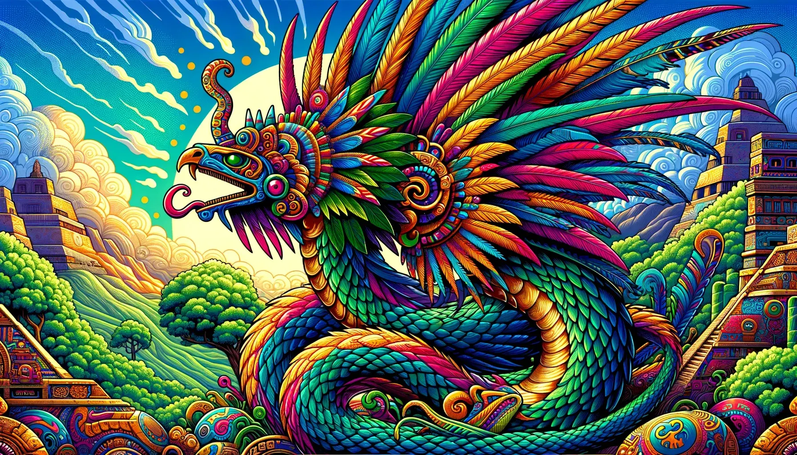

Quetzalcóatl es una de las deidades más importantes de las civilizaciones
mesoamericanas, especialmente entre los pueblos mexicas y toltecas.
Su nombre significa “serpiente emplumada”, ya que combina el cuerpo de
una serpiente con las plumas del quetzal, un ave de gran valor simbólico
en Mesoamérica.
Quetzalcóatl estaba asociado con el conocimiento, la sabiduría, el viento,
la creación, el aprendizaje y la civilización. Se le consideraba un dios
benefactor que enseñó a los humanos múltiples conocimientos.
Según algunas leyendas, ayudó a crear a la humanidad usando huesos de
civilizaciones anteriores y su propia sangre. También se decía que regaló
el maíz a los seres humanos, alimento fundamental para estas culturas.
En muchas representaciones artísticas aparece rodeado de plumas verdes
y símbolos celestiales, destacando su conexión con la naturaleza y el cielo.
Su figura sigue siendo una de las más emblemáticas de la mitología
mesoamericana.